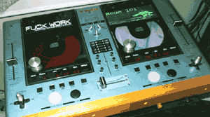

on the Linux box.
no hard install here, a quick ‘./configure’, ‘make’ and ‘make install’ and we’re done. We need root priveleges here, so if ya’re doing this at a hosted site,
better contact them and see if they will set it up for ya. This article is geared more to people perhaps running a Linux gateway a home, with
a DSL connection.
Icecast, is an open source version of Shoutcast, which was one of the first streaming servers under the Windowz platform, although it has now been ported to Linux, and other *nix variants, it still has a funky commercial license, whereas Icecast is under the ever sexy GNU Public License.
Anyways, it is installed by default under ‘/usr/local/icecast’. The three important directories are bin, conf and logs. There is also a doc directory, which contains a nice manual in html format.
Under its ‘conf’ directory, edit the icecast.conf file and change stuff to be relevant for your own site,
such as your email address and URL, description of music and quite importantly, the encoder, admin and operator passwords. Save your changes, and you should now be able now start the server by running
‘/usr/local/icecast/bin/icecast’. This will take you into the Admin Console mode, where you can see server stats and do various administrative stuff.
If you’d rather it ran as background daemon, you can start it with ‘-b’ switch which will tidy it out of your pesky way, and leave your console free. To get back to the admin console you can telnet to the server on port 8000. Nothing will happen except the escape character prompt.
Type ‘ADMIN <admin-password>’, of course substituting the <admin-password> for whatever you changed it to in the icecast.conf file. Then press Return twice. BAM! Should have a console. Type help for a list of commands, of see the documentation.
Excellent, so we now have the server side setup. We can go one of two ways now, we can stream a static list of MP3s or we can broadcast live.
The static list of files is real easy. Included with Icecast, are two other programs, called ‘Shout’ and ‘Liceice’. I haven’t use ‘Liveice’ so I can’t say much about it. Shout is the static encoder and is very easy to use, so I won’t go into it much either. Basically, Shout has a conf file also, where you can put in the encoder password you specified earlier, and you give it a filename to read which contains a list of your MP3s to stream. The easiest way to create your playlist file is by first running an’updatedb &’ command which builds a handy index of your harddrive files.
Then run ‘locate *.mp3 > playlist.txt’. This command searchs your newly created index for all files and pipes the results out to our file called ‘playlist.txt’. Shout has various options for randomizing your list and endlessly looping, so you could leave it going continually

Onto the live stream.
What I wanted to do was hook up Vestax CDX-12 unit to my computers line in jack and stream live from that. For this I used my windows box. I know, I know, don’t hound me. I usually run a Mandrake Linux box for my desktop, but lately I been having to use Windoze, so I can run ACID, Photoshop and some other s/ware, and for the live streaming, the Shoutcast plugin for WinAmp runs excellent. It takes the stream from line-in, encodes it and sends it out to your server. People tune in to your server’s IP address and POW! Web radioshow!
Ok, so chances are you already have WinAmp installed. If not, get it from
and look for the download page, select the ‘Be a DJ’ option and download the ShoutCast Winamp DSP Plug-in, and they also have some other tools for using, such as for doing voiceovers. The install is really simple. It finds your Winamp directory and sticks itself in your plugin dir.
Run Winamp, go to the menu and select Options, Preferences, and then goto Plugins, DSP/Effect and you should see the ‘SHOUTcast Source for Winamp. Click on it and you should get a control box pop up. The top of the line is for Server. Select Edit and type in your Icecast server’s ip address, the port (Should be 8000) and your encoder password. Click OK, The second option is for your encoding bitrate and sound quality. Do the maths here, work out your bandwidth, think how many listeners you will be having and stream accordingly.
Then hit the Connect button. If you still have the console open on your Icecast server, you should be able to see a conversation going on between the boxes, and if it didn’t connect, you should hopefully see some explanations of what went wrong. Another place for clues is to look in the log files, located conviently in the logs directory! If you see no conversation, then something is wrong with the encoders configuration. Check the IP address and port numbers. Funny thing I found when setting mine up, mine would not connect at all, even though all the config was correct. Using tcpdump, a packet sniffer for Linux, I discovered the packets from my encoder were looking for port 8001! Huh, so I just lowered the port in my Winamp/Shoutcast configuration to 7999, and it worked, it send out packets for port 8000. Don’t ask, too weird.
If you have another computer, try connecting to the server to hear your stream!
Problems:
Not enuf bandwidth was my main enemy. All the configuration and setup can be muddled through pretty easily with some guidance. But, yeah, at first I did it from home on my 384/128 ADSL line. I was encoding at around 24/Kbps, and with more than four listeners, it was choking. (4 x 24 uses only 96Kbs only, but with the encoder and any other network activity going on it was bad). I was lucky enuf to set up icecast on my mail server at work, which had a phat T-1, but it’s still fun to get a little show going from home.
Any comments or corrections, mail me at